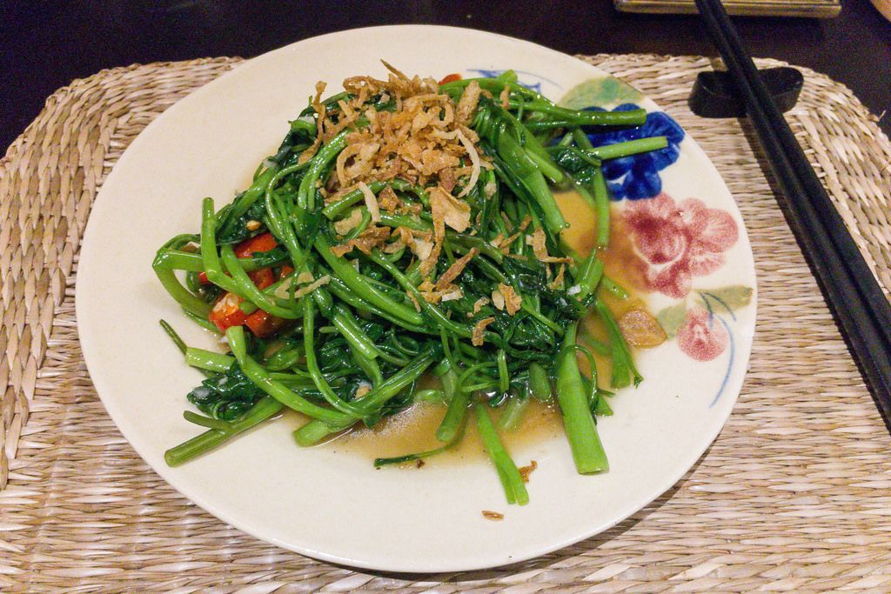

Vegetarian Stir-Fry

Description
A colorful and flavorful stir-fry loaded with fresh vegetables and tofu, tossed in a savory soy-based sauce.
Ingredients
- 2 cups broccoli florets
- 1 bell pepper, thinly sliced
- 1 carrot, julienned
- 1 cup snap peas
- 1 cup tofu, cubed
- 3 tablespoons soy sauce
- 2 tablespoons sesame oil
- 1 tablespoon rice vinegar
- 1 tablespoon honey
- 2 cloves garlic, minced
Steps
- Heat sesame oil in a wok or large skillet over medium-high heat.
- Add tofu and stir-fry until golden brown. Remove tofu from the pan and set aside.
- Stir-fry broccoli, bell pepper, carrot, and snap peas until crisp-tender.
- In a small bowl, whisk together soy sauce, rice vinegar, honey, and minced garlic.
- Return tofu to the pan and pour the sauce over the stir-fry. Toss to combine and serve over rice.